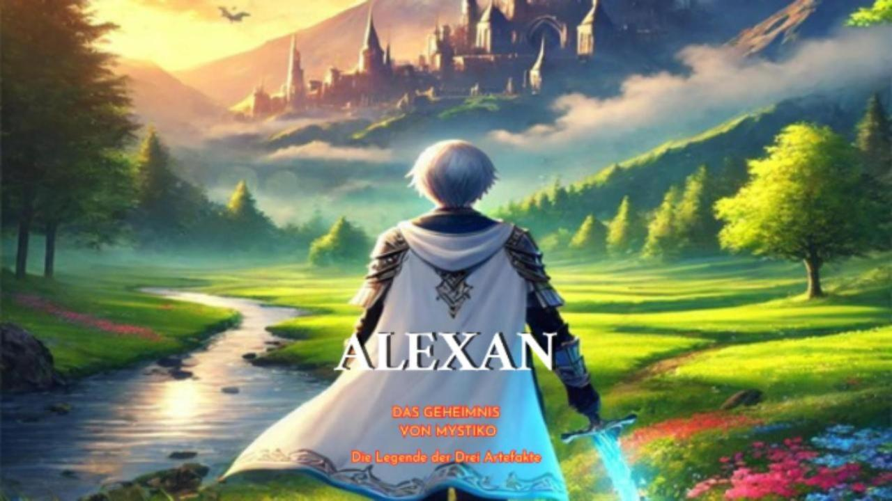

🎧 Cineastisches Kinderhörbuch im Zelda-Stil: So entstand „ALEXAN – Das Geheimnis von Mystiko“ ⚔️🧙♂️
🎞️ Von einer Idee zum Kino fürs Ohr
Nachdem ich im vorherigen Blogbeitrag erzählt habe, wie mein Fantasy-Buch im Zelda-Stil ALEXAN – Das Geheimnis von Mystiko: Die Legende der Drei Artefakte entstand, möchte ich nun zeigen, wie daraus ein einzigartiges cineastisches Fantasy Hörbuch wurde.
💡 Die Idee – vom Kinderbuch zum Hörbuch
Mein neunjähriger Neffe Can Alexan liebt seine Toniebox und hört gerne spannende Abenteuer. So kam mir die Idee, ihm mein Fantasy Buch für Kinder "ALEXAN - Das Geheimnis von Mystiko" als Hörbuch zu schenken. Zuerst wollte ich die Erzählstimme auswählen und spielte ihm drei verschiedene Stimmen aus ElevenLabs vor – doch er wollte, dass ich ihm die Geschichte erzähle. ♥️ Also klonte ich meine eigene Stimme mit ElevenLabs und begann, das Buch aufnehmen zu lassen. Nach einigen Kapiteln merkte ich jedoch, dass etwas fehlte – die Geschichte klang zu einheitlich.
📢️ Jede Figur bekommt eine eigene Stimme
Da ElevenLabs es ermöglicht, Textabschnitte mit unterschiedlichen Stimmen zu vertonen, beschloss ich, jeder Figur ihre eigene Stimme zu geben – wie in einem echten Film. Ich erstellte eine Liste aller Charaktere, überlegte, wie sie klingen sollten, und suchte gezielt nach passenden Stimmen. Dabei half mir auch ChatGPT, Empfehlungen zu finden, die perfekt passten. So entstand für jede Figur ein unverwechselbarer Klang – und Mystiko begann zu leben.
🪄 Die Kunst des Erzählens
Für jedes Kapitel erstellte ich ein eigenes Dokument. Dabei musste ich entscheiden, welche Passagen tatsächlich gesprochen werden sollten. Im Gegensatz zum Buch kann im Hörbuch manches weggelassen werden, da Ton und Stimme vieles bereits ausdrücken. Dann fügte ich in ElevenLabs Kapitel für Kapitel ein, wählte die passenden Stimmen aus und hörte mir die Ergebnisse direkt an. Mit etwas Feintuning bei Authentizität und Tonhöhe entstanden schließlich überzeugende Dialoge.
🎬 Vom Hörbuch zum cineastischen Erlebnis
Trotz der tollen Stimmen fehlte mir noch etwas: die Magie eines echten Kinoerlebnisses. Als grosser Fantasy- und Zelda-Fan wollte ich, dass das Hörbuch Gänsehaut erzeugt – so, als säße man mit geschlossenen Augen im Kino. Ich machte mir das Ziel, ein cineastisches Hörbuch zu erschaffen – ein „Film fürs Ohr“. Dazu suchte ich auf freesound.org nach passenden Musikstücken und Soundeffekten, die an Zelda erinnern und diesen animehaften, magischen Stil einfangen. Tagelang hörte ich mich durch unzählige Klänge, bis ich für jede Szene die passenden Geräusche und Melodien gefunden hatte.
🎶️ Das Mastering – Feinarbeit in sechs Spuren
Anschließend begann der technische Teil: das Mastering mit MixPad Masters von NCH Software. Ich legte jede Stimme, Musik und Soundeffekt in separate Spuren, passte Lautstärke, Timing und Atmosphäre an – teilweise mit bis zu sechs Ebenen gleichzeitig. Dank meiner musikalischen Erfahrung gelang es mir, die Emotionen und Spannung perfekt aufeinander abzustimmen. Ich erstellte zwei Versionen:
-
🎙️ Eine mit meiner eigenen Stimme als Erzähler, persönlich an meinen Neffen adressiert.
🎙️ Eine zweite mit einer klassischen, tiefen Erzählstimme – für ein professionelles, atmosphärisches Hörerlebnis.
🎯 Das Ergebnis
Mein ehrgeiziges Ziel war erreicht: Aus meinem Kinderbuch wie Zelda war ein cineastisches Fantasy Hörbuch geworden. Mein Neffe war begeistert – auch wenn er nach drei Kapiteln meist schon selig einschlief. 😄
🧭 Wie geht es weiter?
Die Geschichte von Mystiko soll weitergehen. Zwei weitere Bücher werden die Welt erweitern, neue Kulturen und magische Kreaturen einführen. Im vierten Band erwartet euch dann ein episches Finale, das alles zusammenführt. Natürlich wird es auch dazu wieder ein Hörbuch geben – vielleicht mit neuen Klängen, vielleicht mit vertrauten Melodien.
🎧 Ein cineastisches Hörbuch – auch für die Toniebox
Das Hörbuch gibt’s in zwei Varianten:
-
🎧 Klassisch: Mit verschiedenen Sprecherstimmen.
🎬 Cineastisch: Mit Musik, vielen Soundeffekten und individuellen Stimmen – ein echtes Hörbuch im Zelda-Stil.
Beide Versionen sind als MP3 erhältlich und funktionieren auch mit der Toniebox – ideal zum Einschlafen oder für unterwegs.
Hörprobe (Kapitel 1)
 ▶️ Jetzt Hörprobe auf YouTube anhören
👉 Weitere Hörproben findest du auf Youtube oder auf der Artikelseite:
📚 Jetzt entdecken
📖 ALEXAN – Das Geheimnis von Mystiko: Die Legende der Drei Artefakte
❤️ Danke fürs Lesen!